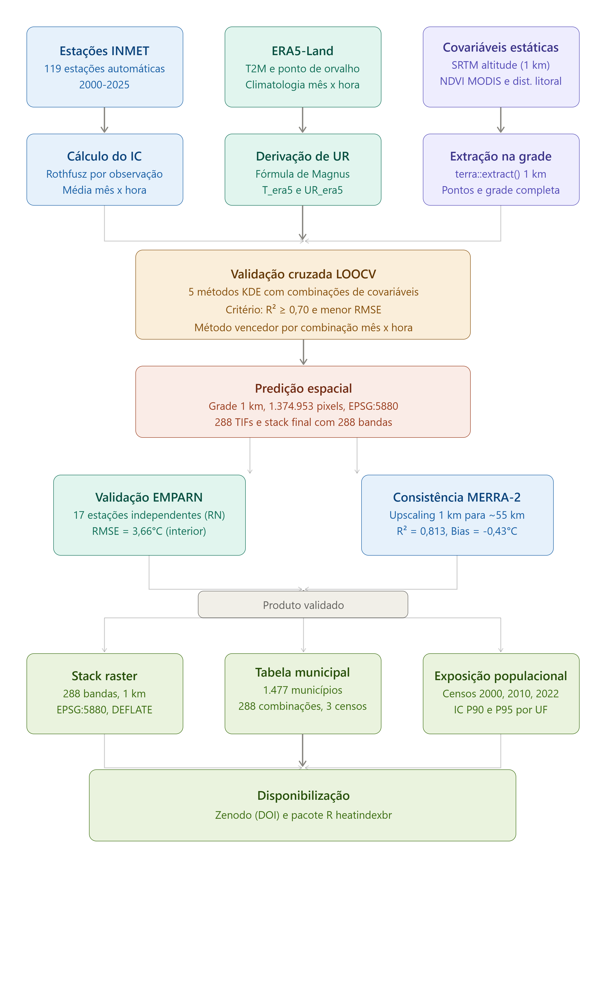

Visão geral do pipeline
Três fontes de dados independentes (estações INMET, ERA5-Land e covariáveis estáticas) são processadas em paralelo e convergem para a etapa de validação LOOCV. O produto validado se bifurca em duas verificações de consistência independentes antes de ser empacotado em três produtos finais: o stack raster, a tabela municipal e o conjunto de dados de exposição populacional.

Pipeline metodológico: dos dados brutos a três produtos distribuídos.
O Índice de Calor
O Índice de Calor (IC) é calculado usando a equação de regressão de Rothfusz (1990), que combina temperatura do ar (T, °C) e umidade relativa (UR, %) em um único índice de conforto térmico, com base no trabalho de Steadman (1979) sobre a resposta fisiológica humana ao calor e à umidade. A velocidade do vento não é considerada, o que torna o índice viável para mapeamento em escala regional onde dados homogêneos de vento não estão disponíveis.
Dos horários sinóticos para uma climatologia completa
O produto principal do pacote cobre todos os 12 meses e todas as 24 horas UTC, totalizando 288 combinações independentes de mês e hora, cada uma representando o IC médio de 2000-2025. Cada combinação foi modelada e validada de forma independente. Não há um único melhor método para todo o conjunto de dados, pois o processo físico que determina o IC muda ao longo do dia.
Método vencedor por combinação
Cada uma das 288 combinações foi modelada usando krigagem com deriva externa (KDE), testando combinações de altitude, temperatura, umidade relativa e covariáveis ERA5-Land. O Random Forest foi testado e descartado por vazamento espacial confirmado pela validação cruzada por blocos (delta R² = 0,082). O método vencedor foi selecionado com dois critérios em sequência: R² maior ou igual a 0,70, depois menor RMSE entre os métodos qualificados.
O heatmap abaixo mostra qual método vence para cada uma das 288 combinações, organizado por mês (colunas) e hora local (linhas, UTC-3). À noite (00h às 06h local), KDE apenas com altitude vence em quase todo o domínio. Durante o dia (09h às 18h local), métodos que usam ERA5-Land dominam.

Método de interpolação vencedor por mês e hora local. Critério: R² maior ou igual a 0,70 e menor RMSE. Azul: KDE com altitude. Laranja e vermelho: KDE com covariáveis ERA5-Land.
Resultados de validação
Consistência com a reanálise MERRA-2
Os valores preditos de IC foram upscaled de 1 km para aproximadamente 55 km e comparados com a reanálise MERRA-2 da NASA, totalmente independente da rede INMET usada para construir esta climatologia. Como ambos são modelos e não verdade de campo, apenas R² e Bias são reportados.

IC predito (1 km, upscaled para 55 km) vs reanálise MERRA-2 (~55 km). R² = 0,813, Bias = -0,43°C.
Especificações técnicas
| Propriedade | Valor |
|---|---|
| Arquivo | IC_288h_stack.tif |
| Bandas | 288 (12 meses x 24 horas UTC, ordem mês-externo hora-interno) |
| CRS | EPSG:5880 (SIRGAS 2000 / Brazil Polyconic) |
| Resolução | ~1 km |
| Cobertura | Semiárido Brasileiro (CONDEL/SUDENE 176/2024) |
| Período | Climatologia 2000-2025 |
| Zenodo DOI | 10.5281/zenodo.21049066 |
As horas são armazenadas em UTC. O pacote converte para hora local (UTC-3) automaticamente.
Exposição populacional
A tabela municipal inclui dados populacionais dos Censos IBGE de 2000, 2010 e 2022. Totais de população do Semiárido Brasileiro:
| Ano do censo | População |
|---|---|
| 2000 | 27.719.145 |
| 2010 | 29.975.455 |
| 2022 | 31.035.363 |
Usando pesos populacionais de 2022, o IC médio no Semiárido é de 25,9°C, com o percentil 90 em 31,6°C e o percentil 95 em 32,4°C. Use hi_exposure() para calcular a população por classe NOAA para qualquer mês e hora local.
Apêndice: produto sinótico 2025 (v0.1.0)
O produto original, ainda disponível via product = "synoptic_2025", fornece o IC médio anual de 2025 em quatro horários sinóticos (00h, 09h, 15h, 21h hora local). Validação: R² = 0,884 e RMSE = 1,04°C às 15h. DOI: 10.5281/zenodo.20942619.
Referências
ROTHFUSZ, L. P. The heat index equation (or, more than you ever wanted to know about heat index). NWS Technical Attachment SR 90-23. National Weather Service, Fort Worth, TX, 1990.
STEADMAN, R. G. The assessment of sultriness. Part I: a temperature-humidity index based on human physiology and clothing science. Journal of Applied Meteorology, v. 18, n. 7, p. 861-873, 1979.
BRASIL. Resolução CONDEL/SUDENE n. 176, de 26 de março de 2024. Aprova a delimitação do Semiárido Brasileiro. Superintendência do Desenvolvimento do Nordeste, Recife, 2024.